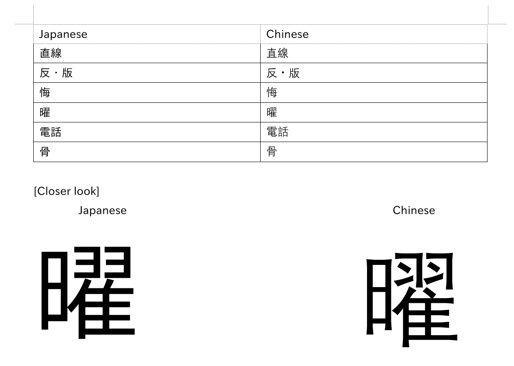

Apakah Anda menggunakan font yang tepat?¶

Secara default, komputer / ponsel Anda akan menampilkan kanji dalam font Cina. Kanji Jepang terlihat sedikit berbeda, dan bisa merugikan jika Anda belajar penampilan kanji Cina daripada yang Jepang.
Memverifikasi apakah browser Anda saat ini menggunakan font Jepang
Satu karakter yang terlihat sangat berbeda antara font Jepang dan Cina adalah 直 yang digunakan dalam kata 直す (naosu) yang berarti menyembuhkan, memperbaiki.


Jika 直 Anda terlihat seperti gambar kedua, selamat! Anda menggunakan font Jepang, jika tidak, ubah font Anda.
Windows 10¶
Win+I untuk membuka Pengaturan > Aplikasi > Fitur opsional > Tambahkan fitur > Cari "font tambahan Jepang" dan Instal
Pengguna Lanjutan: Powershell
Font Jepang juga dapat diinstal menggunakan Windows Powershell (Administrator):
Get-WindowsCapability -Online -Name Language.Fonts.Jpan~~~und-JPAN* | Add-WindowsCapability -Online
Apakah Anda juga sudah menginstal font tambahan Cina?
Anda perlu mengatur lokal Anda ke Jepang (Jepang).
Mengatur lokal Jepang
- Buka dialog Run dengan menekan Win+R
- Ketik
intl.cpldan tekan Enter - Klik pada tab Administratif, pergi ke Ubah lokal sistem... dan pilih Jepang (Jepang) dan klik OK.
Sekarang jika Anda menggunakan browser berbasis Chromium (misalnya Google Chrome, Brave), klik Menu > Pengaturan > klik pada Tampilan di sebelah kiri > Sesuaikan font. Di sinilah Anda perlu mengatur font Anda.
Font standar: Meiryo UI
Font serif: Yu Mincho
Font sans-serif: Meiryo
Monospace: MS Gothic
Jika Anda menggunakan Firefox, itu sudah dikonfigurasi sebelumnya.
macOS¶
Anda hanya perlu menambahkan Jepang sebagai bahasa yang diutamakan di Preferensi Sistem.
> Preferensi Sistem, lalu klik Bahasa & Wilayah. Klik Umum, lalu Tambah bahasa dan pilih Jepang 日本語
Linux¶
Anda harus memiliki ja_JP.UTF-8 sebagai salah satu lokal Anda. Jika tidak, hapus komentar pada baris #ja_JP.UTF-8 UTF-8 di /etc/locale.gen dan jalankan:
sudo locale-gen
Sekarang instal paket noto-fonts-cjk . Ini tersedia di repositori resmi Arch dan dikenal untuk mengatur aturan fontconfig yang diperlukan saat diinstal di Arch.
Jika bagian mana pun dari itu tidak berlaku untuk Anda (misalnya distro yang berbeda, font yang berbeda, metode instalasi yang berbeda), fontconfig mungkin atau mungkin tidak telah diatur dengan benar.
Jika Anda tidak tahu cara memeriksa itu, cukup buat file baru dengan aturan fontconfig yang diperlukan di direktori ~/.config/fontconfig/conf.d (buat direktori jika tidak ada) untuk teks Jepang. Anda dapat menggunakan ini bagian dari Wiki Arch atau ini contoh file konfigurasi yang sangat baik oleh tatsumoto-ren sebagai referensi.
Catatan¶
Browser¶
Berbasis Chromium¶
Font Cina masih bisa muncul bahkan dengan pengaturan yang benar (tidak tahu mengapa), jadi Anda mungkin perlu memaksanya dengan melakukan hal berikut:
> Pengaturan > klik pada Tampilan di sebelah kiri > Sesuaikan font
Font standar: Noto Sans CJK JP Regular
Font serif: Noto Serif CJK JP Regular
Font sans-serif: Noto Sans CJK JP Regular
Firefox¶
Kecuali Firefox telah mengatur Jepang sebagai salah satu bahasanya atau halaman web (atau salah satu bagiannya) secara eksplisit mengklaim berada dalam bahasa Jepang (lang="ja"), ia cenderung kembali ke karakter Cina.
Untuk mengatasi ini, lakukan hal berikut:
- Buka tab baru ke
about:config - Klik melalui halaman peringatan (jika muncul)
- Cari
font.cjk_pref_fallback_order - Pindahkan
jake depan seluruh nilai
Koma itu penting
Mereka ada untuk memisahkan nilai bahasa dalam kalimat itu, hati-hati jangan sampai menghapusnya secara sembarangan.
Sebelum:

Setelah:

Android¶
Cukup tambahkan Jepang (ini terlihat seperti: 日本語) sebagai bahasa sekunder, itu tidak akan mengubah bahasa tampilan Anda kecuali Anda memindahkannya ke atas.

iOS¶
Menambahkan keyboard Jepang (kana atau romaji apapun yang berfungsi) seharusnya sudah cukup.
Anki¶
Saya rasa font Cina di kartu Anki terlihat paling buruk karena kana akan sans-serif dan kanji akan serif DAN tidak proporsional DAN Cina sehingga terlihat sangat tidak sesuai.

Setelah Anda menginstal font Jepang di sistem Anda, itu seharusnya secara otomatis menggunakan font Jepang. Jika tidak, Anda perlu memaksanya.
Memaksa font Jepang di Anki¶
IPAex Gothic adalah font sans-serif Jepang yang baik yang saya rekomendasikan untuk Anki. Anda dapat mengunduhnya di sini
Instal font ke sistem Anda dan reboot.
Windows: Klik dua kali dan klik Instal
macOS: Seret font ke Font Book
Linux: Pindahkan file ke ~/.local/share/fonts/ dan kemudian jalankan fc-cache -f -v
Sekarang di Anki klik "Tambah" lalu klik "Kartu" dan kemudian "Gaya" dan modifikasi keluarga font Anda sesuai.
.card {
font-family: IPAexGothic; /* di sini adalah tempat Anda mengatur font */
}
Anda juga dapat mengubah font dengan menempatkan font ke direktori collection.media Anki.
Windows: C:\Users\<user>\AppData\Roaming\Anki2\(profile)\collection.media
macOS: ~/Library/Application Support/Anki2/(profile)/collection.media
Linux: ~/.local/share/Anki2/(profile)/collection.media
Android: /storage/emulated/0/AnkiDroid/collection.media
Sekarang di Anki klik "Tambah" lalu klik "Kartu" dan kemudian "Gaya" dan modifikasi keluarga font Anda sesuai.
Jangan salin persis!
Cukup tambahkan apa yang belum Anda miliki.
.card {
font-family: CustomFont; /* di sini adalah tempat Anda mengatur font */
@font-face {
font-family: CustomFont; src: url('ipaexg.ttf'); } /* di sini adalah tempat Anda mendefinisikan font */
}
Pratonton:


Sekarang juga ubah font Anda untuk editor Anki. Klik "Tambah" lalu "Bidang" dan ubah font Pengeditan setiap bidang ke salah satu dari ini (atau font lain yang Anda tahu adalah font Jepang)
IPAexGothic
Meiryo
MS Gothic
Yu Gothic
Hiragino Kaku Gothic Pro
Noto Sans CJK JP Regular
Yomichan¶
Font Yomichan seharusnya berubah sesuai dengan font browser Anda, tetapi Anda dapat memaksa font Jepang jika tidak.
Menggunakan CSS Popup...
.kanji-link {
font-family: IPAexGothic;
}
.source-text {
font-family: IPAexGothic;
}
.gloss-content {
font-family: IPAexGothic;
}
.tag-label-content {
font-family: IPAexGothic;
}